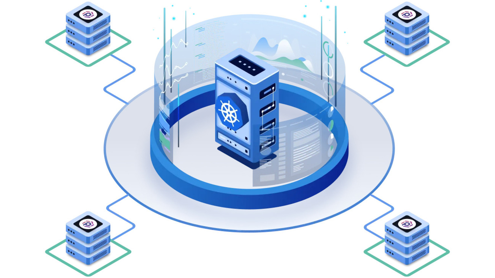
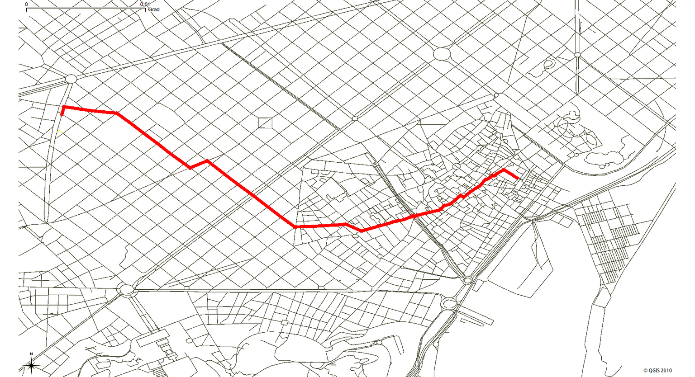

<!DOCTYPE html>
<html lang="en">
  <head>
    <meta charset="utf-8" />
    <meta
      name="viewport"
      content="width=device-width, initial-scale=1, shrink-to-fit=no"
    />
    <meta name="description" content="" />
    <meta name="author" content="" />
    <link
      href="https://fonts.googleapis.com/css?family=Lato:100,300,400,700,900"
      rel="stylesheet"
    />

    <title>Shazam Razzaq Portfolio</title>

    <!-- Bootstrap core CSS -->
    <link href="vendor/bootstrap/css/bootstrap.min.css" rel="stylesheet" />

    <!-- Additional CSS Files -->
    <link rel="stylesheet" href="assets/css/fontawesome.css" />
    <link rel="stylesheet" href="assets/css/templatemo-style.css" />
    <link rel="stylesheet" href="assets/css/owl.css" />
    <link rel="stylesheet" href="assets/css/lightbox.css" />
  </head>

  <body>
    <div id="page-wraper">
      <!-- Sidebar Menu -->
      <div class="responsive-nav">
        <i class="fa fa-bars" id="menu-toggle"></i>
        <div id="menu" class="menu">
          <i class="fa fa-times" id="menu-close"></i>
          <div class="container">
            <div class="image">
              <a href="#"></a>
            </div>
            <div class="author-content">
              <h4>Shazam Razzaq</h4>
              <span>Computer Scientist</span>
            </div>
            <nav class="main-nav" role="navigation">
              <ul class="main-menu">
                <li><a href="#section1">About Me</a></li>
                <li><a href="#section2">What I’m good at</a></li>
                <li><a href="#section3">Experience</a></li>
                <li><a href="#section4">My Work</a></li>
                <li><a href="#section5">Contact Me</a></li>
              </ul>
            </nav>
            <div class="social-network">
              <ul class="soial-icons">
                <li>
                  <a href="https://fb.com/templatemo"
                    ><i class="fa fa-facebook"></i
                  ></a>
                </li>
                <li>
                  <a href="#"><i class="fa fa-twitter"></i></a>
                </li>
                <li>
                  <a href="#"><i class="fa fa-linkedin"></i></a>
                </li>
                <li>
                  <a href="#"><i class="fa fa-dribbble"></i></a>
                </li>
                <li>
                  <a href="#"><i class="fa fa-rss"></i></a>
                </li>
              </ul>
            </div>
          </div>
        </div>
      </div>

      <section class="section about-me" data-section="section1">
        <div class="container">
          <div class="section-heading">
            <h2>ABOUT ME</h2>
            <div class="line-dec"></div>
          </div>
          <div class="left-image-post">
            <div class="row">
              <div class="col-md-6">
                <div class="left-image">
                  
                </div>
              </div>
              <div class="col-md-6">
                <div class="right-text">
                  <h4>PROFESSIONAL SUMMARY</h4>
                  <p>
                    Detail-oriented computer scientist with a solid foundation in Python programming, databases, data analysis, and visualization. 
                    Currently working as a Full Stack Developer, where I develop backend services using JavaScript, Node.js, and Express, and design database schemas. 
                    Proficient in frontend technologies, including React and Tailwind CSS, to create responsive and user-friendly interfaces. 
                    Experienced in implementing SIEM solutions with Wazuh and integrating network security tools. 
                    Skilled in managing projects, improving processes, and maintaining reliable backend systems. 
                    Seeking to leverage technical expertise and innovative thinking in a dynamic and collaborative environment.
                  </p>
                </div>
              </div>
            </div>
          </div>
          <div class="right-image-post">
            <div class="row">
              <div class="col-md-6">
                <div class="left-text">
                  <h4>EDUCATION</h4>
                  <p>
                    <strong>Bachelor in Computer Science</strong><br>
                    Namal University Mianwali<br>
                    GPA: 3.26<br>
                    2021 - 2025
                  </p>
                  <p>
                    <strong>Intermediate (Pre-Engineering)</strong><br>
                    DPS College Okara<br>
                    Percentage: 80%<br>
                    2019 - 2021
                  </p>
                </div>
              </div>
              <div class="col-md-6">
                <div class="right-image">
                  
                </div>
              </div>
            </div>
          </div>
        </div>
      </section>
      

      <section class="section my-services" data-section="section2">
        <div class="container">
          <div class="section-heading">
            <h2>WHAT AM I GOOD AT?</h2>
            <div class="line-dec"></div>
            <span>
              I excel in various areas of development, cybersecurity, and data science, utilizing my skills to create efficient solutions, ensure security, and analyze data for impactful insights.
            </span>
          </div>
          <div class="row">
            <!-- Development Skills -->
            <div class="col-md-6">
              <div class="service-item">
                <div class="first-service-icon service-icon"></div>
                <h4>Development</h4>
                <p>
                  JavaScript | Node.js | Express | REST APIs | Python | HTML | CSS | React | Tailwind CSS | SQL | MongoDB | Git | Linux | CI/CD | API Development | Authentication Systems | Middleware | Debugging
                </p>
              </div>
            </div>
      
            <!-- Cybersecurity Skills -->
            <div class="col-md-6">
              <div class="service-item">
                <div class="second-service-icon service-icon"></div>
                <h4>Cybersecurity</h4>
                <p>
                  SIEM Solutions | Wazuh | Network Monitoring | Threat Intelligence | Vulnerability Assessment | Firewall Management | Log Analysis | Malware Detection | Cryptography | Data Protection
                </p>
              </div>
            </div>
      
            <!-- Data Science Skills -->
            <div class="col-md-6">
              <div class="service-item">
                <div class="third-service-icon service-icon"></div>
                <h4>Data Science</h4>
                <p>
                  Data Cleaning | Data Processing | Data Analysis | Data Visualization | TensorFlow | Scikit-Learn | Pandas | Statistical Analysis | Model Evaluation | Predictive Modeling | NumPy
                </p>
              </div>
            </div>
          </div>
        </div>
      </section>
      
      <section class="section experience" data-section="section3">
        <div class="container">
          <div class="section-heading">
            <h2>PROFESSIONAL EXPERIENCE</h2>
            <div class="line-dec"></div>
          </div>
          <div class="left-image-post">
            <div class="row align-items-center">
              <div class="col-md-6">
                <div class="left-image">
                  
                </div>
              </div>
              <div class="col-md-6">
                <div class="right-text">
                  <h4>Full Stack Developer | EZMD Solutions, YANA Medical Project</h4>
                  <p><strong>June 2024 - Present</strong></p>
                  <p>
                    Developing backend services and frontend applications for YANA Medical, a healthcare project providing medical food services to patients. Designing and implementing scalable APIs using JavaScript, Node.js, and Express. Managing database interactions, designing schemas, and implementing data in SQL databases. Collaborating with frontend developers to ensure seamless integration and functionality of the application using React.
                  </p>
                </div>
              </div>
            </div>
          </div>
          <div class="right-image-post">
            <div class="row align-items-center">
              <div class="col-md-6">
                <div class="left-text">
                  <h4>Research Assistant | HPC Research Facility, Namal University Mianwali</h4>
                  <p><strong>June - August 2023</strong></p>
                  <p>
                    Assisted in setting up a basic HPC cluster to support high-performance computing tasks. Contributed to research on distributed computing and its applications. Presented findings and participated in discussions at the Super-computing Summer School.
                  </p>
                </div>
              </div>
              <div class="col-md-6">
                <div class="right-image">
                  
                </div>
              </div>
            </div>
          </div>
        </div>
      </section>
      
      
      <section class="section my-work" data-section="section4">
        <div class="container">
          <div class="section-heading">
            <h2>MY WORK</h2>
            <div class="line-dec"></div>
            <span>Showcasing a selection of my projects that demonstrate my expertise and experience in various fields, from cybersecurity to data science and development. Explore the work that I am passionate about and proud to share.</span>
          </div>
          <div class="row">
            <div class="isotope-wrapper">
              <form class="isotope-toolbar">
                <label><input type="radio" data-type="*" checked="" name="isotope-filter" /><span>all</span></label>
                <label><input type="radio" data-type="cybersecurity" name="isotope-filter" /><span>Cybersecurity</span></label>
                <label><input type="radio" data-type="computernetworking" name="isotope-filter" /><span>Computer Networking</span></label>
                <label><input type="radio" data-type="datascience" name="isotope-filter" /><span>Data Science</span></label>
                <label><input type="radio" data-type="development" name="isotope-filter" /><span>Development</span></label>
                <label><input type="radio" data-type="algorithms" name="isotope-filter" /><span>Algorithms</span></label>
              </form>
              <div class="isotope-box">
                <!-- SIEM Solution with Wazuh -->
                <div class="isotope-item" data-type="cybersecurity">
                  <figure class="snip1321">
                    
                    <figcaption>
                      <a href="assets/images/wazuh.png" data-lightbox="image-1" data-title="SIEM Solution with Wazuh"><i class="fa fa-search"></i></a>
                      <h4>SIEM Solution with Wazuh</h4>
                      <span>Namal University Mianwali</span>
                      <p>Configured a SIEM solution using Wazuh, including server setup, manager, indexer, and filebeat. Integrated Wazuh with Suricata, VirusTotal, Apache2, and Grafana. Simulated DOS and brute force attacks for improved threat analysis.</p>
                    </figcaption>
                  </figure>
                </div>
                
                <!-- IoT-Based Smart City Simulation -->
                <div class="isotope-item" data-type="computernetworking">
                  <figure class="snip1321">
                    
                    <figcaption>
                      <a href="assets/images/samrt city.png" data-lightbox="image-1" data-title="IoT-Based Smart City Simulation"><i class="fa fa-search"></i></a>
                      <h4>IoT-Based Smart City Simulation</h4>
                      <span>Namal University Mianwali</span>
                      <p>Designed and implemented a smart city network using Cisco Packet Tracer, integrating smart houses, offices, and a smart grid system. Set up access control and emergency systems in smart houses.</p>
                    </figcaption>
                  </figure>
                </div>
                
                <!-- Predictive Analysis of NVIDIA Stock Prices -->
                <div class="isotope-item" data-type="datascience">
                  <figure class="snip1321">
                    
                    <figcaption>
                      <a href="assets/images/stock.jpg" data-lightbox="image-1" data-title="Predictive Analysis of NVIDIA Stock Prices"><i class="fa fa-search"></i></a>
                      <h4>Predictive Analysis of NVIDIA Stock Prices</h4>
                      <span>Namal University Mianwali</span>
                      <p>Conducted a comprehensive analysis of NVIDIA stock prices using Linear Regression, ARIMA, and LSTM. Emphasized data preprocessing for model accuracy and provided insights into stock price trends.</p>
                    </figcaption>
                  </figure>
                </div>
                
                <!-- Virtual Cluster Setup -->
                <div class="isotope-item" data-type="computernetworking">
                  <figure class="snip1321">
                    
                    <figcaption>
                      <a href="assets/images/virtual.jpg" data-lightbox="image-1" data-title="Virtual Cluster Setup"><i class="fa fa-search"></i></a>
                      <h4>Virtual Cluster Setup</h4>
                      <span>Namal University Mianwali</span>
                      <p>Created a virtual cluster using VirtualBox and Linux for high-performance computing. Configured multiple VMs for distributed computing tasks and experimentation.</p>
                    </figcaption>
                  </figure>
                </div>
                
                <!-- Facebook Clone -->
                <div class="isotope-item" data-type="development">
                  <figure class="snip1321">
                    
                    <figcaption>
                      <a href="assets/images/face.jpg" data-lightbox="image-1" data-title="Facebook Clone"><i class="fa fa-search"></i></a>
                      <h4>Facebook Clone</h4>
                      <span>Namal University Mianwali</span>
                      <p>simplified version of Facebook without photos recreated with Python,Tkinter for GUI and SQLite3 for database management. The program allows users to cre￾ate an account, log in, add friends, post status, friends' posts and pages.</p>
                    </figcaption>
                  </figure>
                </div>

                <!-- MSTSP Algorithm -->
                <div class="isotope-item" data-type="algorithms">
                  <figure class="snip1321">
                    
                    <figcaption>
                      <a href="assets/images/route.png" data-lightbox="image-1" data-title="MSTSP Algorithm"><i class="fa fa-search"></i></a>
                      <h4>MSTSP Algorithm</h4>
                      <span>Namal University Mianwali</span>
                      <p>Developed an algorithm for determining the shortest global path using the spanning tree concept. Optimized pathfinding and applied the algorithm to various graph scenarios.</p>
                    </figcaption>
                  </figure>
                </div>
                
                <!-- Global Indicators Analysis for Pakistan -->
                <div class="isotope-item" data-type="datascience">
                  <figure class="snip1321">
                    
                    <figcaption>
                      <a href="assets/images/Data.png" data-lightbox="image-1" data-title="Global Indicators Analysis for Pakistan"><i class="fa fa-search"></i></a>
                      <h4>Global Indicators Analysis for Pakistan</h4>
                      <span>Namal University Mianwali</span>
                      <p>Analyzed a dataset with economic, environmental, and other indicators to address Pakistan’s situation. Provided insights and recommendations based on data analysis and visualization.</p>
                    </figcaption>
                  </figure>
                </div>
                
              </div>
            </div>
          </div>
        </div>
      </section>

      <section class="section contact-me" data-section="section5">
        <div class="container">
          <div class="section-heading">
            <h2>CONTACT ME</h2>
            <div class="line-dec"></div>
            <span
              ><ul>
                <li><i class="fa fa-envelope"></i> <a href="mailto:shazamrazzaq1234@gmail.com">shazamrazzaq1234@gmail.com</a></li>
                <li><i class="fa fa-phone"></i> <a href="tel:+923116517962">+923116517962</a></li>
                <li><i class="fa fa-github"></i> <a href="https://github.com/shazamch" target="_blank">GitHub Profile</a></li>
                <li><i class="fa fa-map-marker"></i> Okara, Pakistan</li>
              </ul></span
            >
          </div>
          
          <div class="row">
            <div class="right-content">
              <div class="container">
                <form id="contact" action="" method="post">
                  <div class="row">
                    <div class="col-md-6">
                      <fieldset>
                        <input
                          name="name"
                          type="text"
                          class="form-control"
                          id="name"
                          placeholder="Your name..."
                          required=""
                        />
                      </fieldset>
                    </div>
                    <div class="col-md-6">
                      <fieldset>
                        <input
                          name="email"
                          type="text"
                          class="form-control"
                          id="email"
                          placeholder="Your email..."
                          required=""
                        />
                      </fieldset>
                    </div>
                    <div class="col-md-12">
                      <fieldset>
                        <input
                          name="subject"
                          type="text"
                          class="form-control"
                          id="subject"
                          placeholder="Subject..."
                          required=""
                        />
                      </fieldset>
                    </div>
                    <div class="col-md-12">
                      <fieldset>
                        <textarea
                          name="message"
                          rows="6"
                          class="form-control"
                          id="message"
                          placeholder="Your message..."
                          required=""
                        ></textarea>
                      </fieldset>
                    </div>
                    <div class="col-md-12">
                      <fieldset>
                        <button type="submit" id="form-submit" class="button">
                          Send Message
                        </button>
                      </fieldset>
                    </div>
                  </div>
                </form>
              </div>
            </div>
          </div>
        </div>
      </section>
    </div>

    <!-- Scripts -->
    <!-- Bootstrap core JavaScript -->
    <script src="vendor/jquery/jquery.min.js"></script>
    <script src="vendor/bootstrap/js/bootstrap.bundle.min.js"></script>

    <script src="assets/js/isotope.min.js"></script>
    <script src="assets/js/owl-carousel.js"></script>
    <script src="assets/js/lightbox.js"></script>
    <script src="assets/js/custom.js"></script>
    <script>
      //according to loftblog tut
      $(".main-menu li:first").addClass("active");

      var showSection = function showSection(section, isAnimate) {
        var direction = section.replace(/#/, ""),
          reqSection = $(".section").filter(
            '[data-section="' + direction + '"]'
          ),
          reqSectionPos = reqSection.offset().top - 0;

        if (isAnimate) {
          $("body, html").animate(
            {
              scrollTop: reqSectionPos
            },
            800
          );
        } else {
          $("body, html").scrollTop(reqSectionPos);
        }
      };

      var checkSection = function checkSection() {
        $(".section").each(function() {
          var $this = $(this),
            topEdge = $this.offset().top - 80,
            bottomEdge = topEdge + $this.height(),
            wScroll = $(window).scrollTop();
          if (topEdge < wScroll && bottomEdge > wScroll) {
            var currentId = $this.data("section"),
              reqLink = $("a").filter("[href*=\\#" + currentId + "]");
            reqLink
              .closest("li")
              .addClass("active")
              .siblings()
              .removeClass("active");
          }
        });
      };

      $(".main-menu").on("click", "a", function(e) {
        e.preventDefault();
        showSection($(this).attr("href"), true);
      });

      $(window).scroll(function() {
        checkSection();
      });
    </script>
  </body>
</html>
